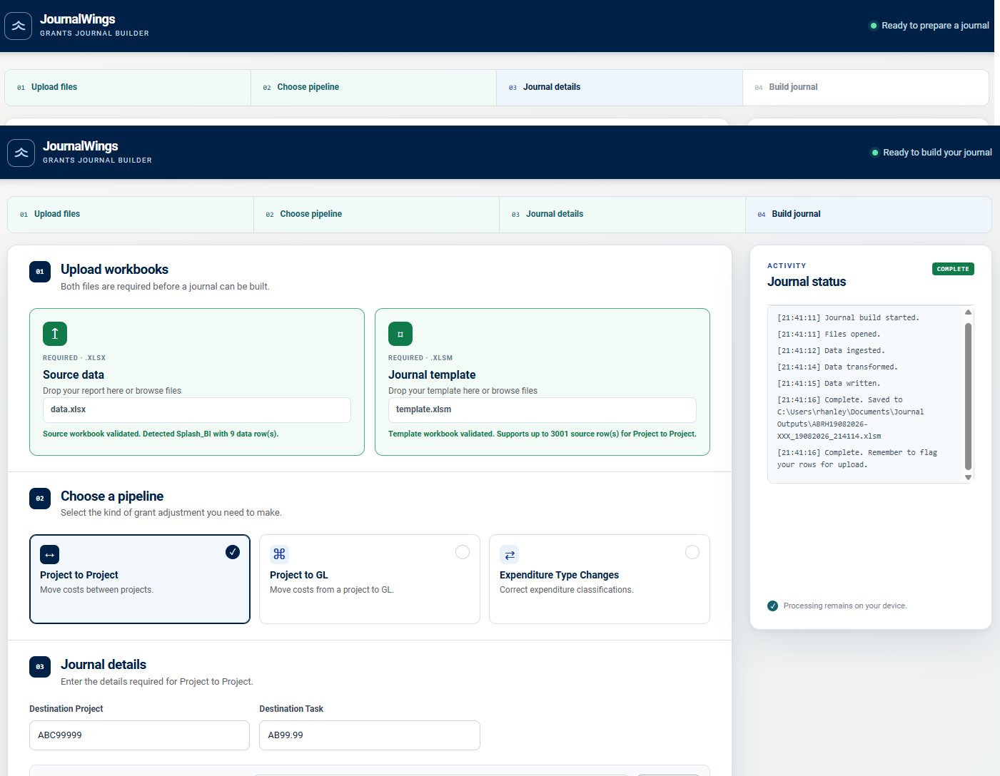
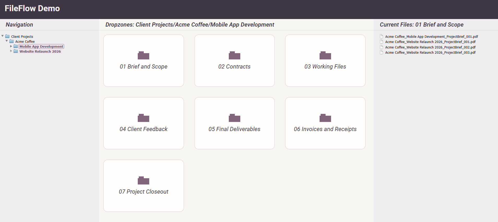

Selected Projects

JournalWings
A Python-based finance workflow application that automates and standardises a previously manual journal preparation process.
The problem
Preparing finance journals involved repetitive manipulation of transaction data, multiple manual checks and significant processing time on larger workflows.
The solution
JournalWings transforms source data using defined business rules, applies automated validation and consistency checks, and produces structured journal outputs ready for the next stage of the process.
Impact
Reduced repetitive manual handling, improved consistency and traceability, and saved several hours on larger journal workflows.
Python · Excel · openpyxl · Data Validation · Workflow Automation
View Project
FileFlow
Imagine if Windows Explorer could use a configured set of rules to interpret where a file is being saved, then suggest a meaningful filename. FileFlow does exactly that: it maps a team's existing folder hierarchy—however simple or complex—to the information needed for consistent filenames in a drag-and-drop workflow.
The problem
In large project structures, consistent document naming often depends on users repeatedly interpreting folder locations, applying naming conventions and entering the same project information manually. Even where good conventions exist, they can be difficult to apply consistently across many users, projects and document types.
The solution
FileFlow uses the destination folder path as structured context. Where folder structures are designed consistently, the application can extract project and document information automatically, combine it with configurable naming rules and generate a meaningful filename with minimal user input.
The user simply drags in a file, chooses where it belongs and reviews the suggested filename before saving. FileFlow removes the need for users to remember and manually apply numerous fiddly naming conventions, while still giving them the final say over the filename. The underlying rules provide a document-management level of consistency without making the user responsible for knowing the full convention themselves.
Impact
Reduced repeated typing and manual interpretation, improved naming consistency across different document types and project repositories, and embedded structured document-management practices into a simple drag-and-drop interface.
Python · Desktop UI · File System Context · Validation Logic · Workflow Automation
View ProjectAbout
I work in research finance in a large university environment, managing complex funding, financial and compliance workflows. Alongside that role, I build automation and internal tools to reduce repetitive work, improve data quality and make difficult operational processes easier to use. My earlier background includes almost ten years in project cost control within international engineering. I’m now increasingly focused on Python, workflow automation, AI-assisted tools and practical software that solves real operational problems